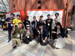
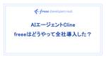

freee Developers Hub
https://developers.freee.co.jp/
フリー株式会社の開発者（エンジニア, デザイナー,プロダクトマネージャー, etc...）によるブログです
フィード
2025/5/9 freee Tech Night「Re：ゼロから始める新卒研修サービス〜まさかの社内で本番運用！？〜」アーカイブ
freee Developers Hub
www.youtube.com 2025年5月9日に開催された freee Tech Night の動画アーカイブです。新卒研修で開発されたサービスを本番で運用するまでの話です。 以下のブログ記事に関連しています。 developers.freee.co.jp developers.freee.co.jp
1日前

RubyKaigi 2025 の振り返り会を開催しました [前編] 3
3
freee Developers Hub
こんにちは! 関西でfreee販売の開発を担当しております bucyou こと川原です。 RubyKaigi 2025 の閉幕から3週間が経ちました。これまでに、Drinkup イベントの様子やLTの内容について紹介してきましたが、今回は社内向けに実施したトークからの学びの共有会のダイジェストをお送りします。 RubyKaigi 2025 のスポンサーボードの前で 今までの RubyKaigi 2025 関連の記事はこちら developers.freee.co.jp developers.freee.co.jp 前半の登場人物 hachi: RubyKaigi 2025 ではLT登壇やDJに…
2日前

AIエージェントCline、freeeはどうやって全社導入した？ 325
freee Developers Hub
はじめに 最近のAI関連技術の進化は目まぐるしいですよね。私たちfreeeの開発組織でも、世の中のトレンドに追従、あるいは先回りする形でGitHub Copilotや社内から安全にLLMを利用するための基盤整備にも取り組んできました。そして2025年、これまでの検証フェーズを経て、AI活用をさらに加速させるべく、AIツールの本格導入を進めています。 現在、freeeの開発現場では主に GitHub Copilot、Cline、そしてDevinといったAIツールが活用されています（他にも細かなツールはありますが！）。特に最近全開発者向けに開放されたClineは、今後の開発スタイルを変える可能性を…
7日前
新卒研修で作ったプロダクトを本番で運用している話 52
freee Developers Hub
こんにちは！24 新卒で freee に入社した kochan です！ 以前投稿した新卒研修の事例紹介の記事では、freee の新卒研修で社内のコミュニケーションに関する課題を解決するために、ショート動画プラットフォームを作成したことをお伝えしました。今回の記事では、新卒研修後に本番運用に乗せるまでにどんなことをしたのかを説明し、新卒研修後の取り組みで学んだことをお伝えします。 また、この記事に関する内容は 5/9 に freee tech night で話す予定ですので詳細が気になる方はぜひご参加ください！ freee-tech-night.connpass.com 本番運用にあたって行った…
13日前

2025/4/18 RubyKaigi 2025 LT資料 - "Fiber Scheduler vs. General-Purpose Parallel Client" by hachi
freee Developers Hub
RubyKaigi 2025 の LT (2025/4/18) にて発表された、"Fiber Scheduler vs. General-Purpose Parallel Client" の資料です。 speakerdeck.com なお、gRPC が Fiber による通信ができない課題については、修正が出そうな雰囲気があります。 As @hachiblog pointed out during the lighting talk, some gems are not (yet) compatible with the fiber scheduler, but this relatively…
14日前
2024/12/11 Authlete Customer and Partner Meetup 2024 登壇資料 "freee における OAuth/OpenID Connect の活用と Authlete への移行" by てらら
freee Developers Hub
2024/12/11 に開催された、Authlete Customer and Partner Meetup 2024 における登壇資料および文字起こしです。 www.authlete.com
14日前
2025/5/15 Techlead Meetup 〜技術リーダーシップとは何か〜 を開催します (オンライン・オフライン開催)
freee Developers Hub
5/15(木) に、弊社および株式会社LayerX, 株式会社ログラス共催でTechlead Meetup (テックリードミートアップ) を開催いたします。 今日では「テックリード」「テクニカルマネジメント」という言葉を見かけますが、その捉え方は会社によって様々です。 テックリードとエンジニアリングマネージャーでどう役割分担をすべきか。 テックリードとして技術的意思決定をどう行うべきか。 様々な悩みを抱える中で、みなさんそれぞれが自分なりの答えを探しているのではないでしょうか。 このイベントは、テックリードのような役割に就いている / 興味を持っている方々が、知見やマインドを共有し合うことで、…
17日前
社内のDatadogイベントに参加した感想
freee Developers Hub
サマリ 社内イベント楽しい！ Datadog Tシャツもらった！ profilerがすごい！あるリクエスト中のCPU使用率を関数単位で見れるぞ！ トレースクエリの検索機能もすごい！AからBに対するリクエストという検索ができるぞ！ Datadogのロゴのかわいいワンちゃんは bits という名前だぞ！これだけでも覚えて帰ってくれ！ Datadogのロゴ。このかわいいワンちゃんはbits。bitsくん、bitsちゃんではなく概念的存在（真偽不明） あいさつ こんにちは。freee申告・所得税の開発をしています。新卒二年目のsuzakiです。 所得税というと定額減税とか103万の壁とかのヤツですね。…
20日前
RubyKaigi 2025 で DrinkUp イベントを開催しました
freee Developers Hub
こんにちは。freee 大阪拠点で freee販売を開発しております、bucyou (ぶちょー) こと、川原です。 先週は RubyKaigi 2025 お疲れ様でした。先週は火曜日からフェリーで愛媛に向かい、そして金曜日の夜から土曜日にかけて大阪へ帰り、そして翌日は技術者試験を受けるというなかなかハードなスケジュールになってしまいました。 愛媛から大阪へのフェリーの様子 今回 freee から参加したメンバーによっては 松山城に行ったり、DJ として活躍したり、登山をしたりと、おのおのの活動をしており、地方でのカンファレンスの醍醐味というものを感じることができました。 ＊個々人の感想記事も面…
20日前
【実践QA】テストチャーター作成からテスト実行までの実践例
freee Developers Hub
こんにちは、フリーのQAマネージャーをしているymty（ゆもつよ）です。 今回は、フリーのQAにてどのようにしてテストチャーターを作って実行しているか、1年ほど前に新規リリースした「freee支出管理 小口現金」の新規開発時の、実際のテスト分析資料を元にご紹介します。 テストチャーターを書く前に、私が入る案件で行っているのが「フィーチャーの整理と論理的機能構造をつかったテスト分析」です。 言い換えれば、「このフィーチャーは内部で小さな機能がどう動いてるか、そこまで深掘りして理解した上で何をテストすべきか？」をロジカルに分解していくプロセスです。 ステップ①：マインドマップでフィーチャーを洗い出…
23日前
高速でスケーラブルなE2E実行基盤を目指して
freee Developers Hub
こんにちは。SEQ (Software Engineering in Quality)のzakiです。 これまで、freeeのE2Eテストは、Selenium、RSpec、Capybara、およびSitePrismを基盤とするRubyのテストを、Jenkinsを用いて実行していました。この構成にはいくつか課題があったため、現在は PlaywrightをベースにしたTypeScriptのテストを、GitHub Actionsで実行する新構成への移行を進めています。今回はその内、JenkinsからGitHub Actionsへの実行基盤の移行について紹介します。 従来のE2E実行基盤の構成とその課…
1ヶ月前
freeeの開発組織で作成したノベルティをご紹介します！
freee Developers Hub
はじめに こんにちは！maoです。freeeでは本業であるセキュリティの他、dev brandingの活動に参加しています！ dev brandingといっても何それ？と思うかもしれません。実際やってることは様々なのですが、例えば大崎にある本社での技術系イベントの主催・共催や、RubyKaigi 2025やTSKaigi 2025といったカンファレンスのスポンサーがあります。技術系イベントへの参加経験がある方はご存知かもしれませんが、このような場では各社様々なノベルティの配布を行ってますよね。freeeも、受け取るみなさんに喜んでいただきたい、またfreeeらしさを受け取ってもらいたいという気…
1ヶ月前
社内で RubyKaigi 2025 直前座談会 を開催しました
freee Developers Hub
こんにちは。freee 大阪拠点で freee販売を開発しております、bucyou (ぶちょー) こと、川原です。 developers.freee.co.jp RubyKaigi 2025 まで、残すところ1週間となりました。Xを見る限りは、もう現地入りしている方もいて、ワクワクしているところです。 freeeからは10名のエンジニアが現地参加の予定です。一方で、メンバーによって Ruby での業務経験がまだ浅かったり、Rubyコミュニティの雰囲気をよくわからないという新卒1年目までいるという状況で、どのように楽しんで、何を学ぶべきか? というのがわからないという方もいる状態でした。おそらく…
1ヶ月前
脆弱性診断 with AIエージェント、はじめました。
freee Developers Hub
こんにちは！PSIRT red team の kaworu と yusui です。 最近力を入れて取り組んでいる、 AIエージェントを利用した脆弱性診断の取り組みについて紹介します。 取り組みの背景 はじめに、現在のfreeeの脆弱性診断の体制と、取り組みの背景についてです。 freeeの脆弱性診断の流れとしては、開発チームから、設計レビューの依頼をきっかけに始まります。 セキュリティ観点でレビューを行い、あわせて脆弱性診断が必要な対象を決定しています。診断が必要なものは準備、診断作業、そして結果が開発チームに共有、修正が必要なものは対応を依頼しています。 上述のような流れなのは、Webアプリ…
1ヶ月前
Ruby on Rails の View に React 製社内デザインシステムを導入した話（freeeサイン）
freee Developers Hub
はじめに by @solt9029 freeeサインの開発に携わっているソフトウェアエンジニアの塩出（@solt9029）です。 freeeのプロダクトには、freee会計やfreee人事労務をはじめとし、非常に多くのものが存在します。このような状況下で、各プロダクトがそれぞれ独自のデザインを採用してしまうと、プロダクト間で似たような操作に微妙に異なるデザインや体験が採用されてしまい、ユーザーの認知・学習コストが不必要に増加してしまいます。 そこで、ユーザーがプロダクト間で類似する操作や体験が統一的に行えるように、社内では「vibes」や「標準UI」といったデザインシステムが開発されてきました…
2ヶ月前
RubyKaigi 2025 協賛 と Drinkup(2日目)開催のお知らせ
freee Developers Hub
こんにちは。freee 大阪拠点で freee販売を開発しております、bucyou (ぶちょー) こと、川原です。 freee は、2025年4月16日(水)〜4月18日(金) に開催される、「RubyKaigi 2025」 に協賛いたします。 ありがたいことに、freee からは私も含め10名のエンジニアが参加できることになり、普段使っている Ruby について知見を深めたり、交流ができればと考えております。 そんな freee の Rubyエンジニアと、RubyKaigi に参加しているエンジニアの皆さんが交流できるようにするべく、Drinkup イベントを開催いたします。開催日は会期2日…
2ヶ月前
Devindabot: Devinで実現するライブラリの脆弱性自動対応システム
freee Developers Hub
freee PSIRT( Product Security Incident Response Team ) のhikaeです。freeeでも自律型AI AgentのDevin*1を雇用しています。 今回はPSIRTの業務の一つである Dependabot対応におけるDevinの活用事例（Devindabot）… ライブラリの脆弱性対策にAIを活用して、開発ライフサイクル全体にいい影響が出た話 をご紹介します。 Dependabot対応 ... ライブラリの脆弱性対策 ライブラリアップデートの辛さ フローを見直し負担を下げる DependabotがPull Requestを作る流れ 1. Gi…
2ヶ月前
EKSの権限整備のため、K8sのRBACについて勉強した話
freee Developers Hub
こんにちは、SREの久保木です。一年弱ぶりにまた記事を書きます。 以前はfreeeに入って割とすぐの頃で、Project間の依存関係を表す図を自動生成したりしていました。 その後はfreeeで使われているTerraform Codeを一括整備するためにTFLintを導入しつつCustom Ruleを実装したり、この手のLinter導入にありがちな最初の間は警告が多すぎて無視されてしまう問題に対処するために全部のCodeを手入れしたり（すごい量でした……）、結果的にfreeeのInfrastructureのIaC周り全般の知識を得られたのでそれを用いてSecurity Riskのある問題の対処を…
2ヶ月前
freeeの2024年新卒研修の事例 - 社内むけショート動画プラットフォームの開発
freee Developers Hub
こんにちは！24新卒でfreeeに入社したkochanです！この記事では、実際に私が経験した2024年度のエンジニア新卒研修について紹介します。これから研修を控える方や、就職先を検討中の学生の皆さんに、freeeでどのような成長機会が得られるのかをお伝えします。 私たちはまず、営業メンバーも含めた新卒全体で会計などに関する業務知識についての講義を受け、演習を行いました。 その後、エンジニア新卒研修が2.5ヶ月間あります。内容としては前半・後半の2段階構成で、実践的なスキルと即戦力になるための経験を身につけることができます。 前半研修ではWebフレームワークを自作するといった本格的な技術トレーニ…
2ヶ月前
タイガーチームとは何か？ 変化に強い高機動力チームの実践
freee Developers Hub
freee で実践している「タイガーチーム」という特殊な組織体制について、その立ち上げから運営まで、実践的な知見を共有します
2ヶ月前
2024年、フリーのQAエンジニアのインターンシップを超アップデートしたよ
freee Developers Hub
こんにちは、QAエンジニアのyamaeriです。 フリーのQAエンジニアインターンシップも3年目の開催となりました。 インターンシップにずっと関わってきましたが、ついに今年は私がオーナーシップを持つことになりました。 そこで、新たな取り組みをいくつかしてみたので、それらも含めて紹介します。 インターンシップの目的 近年ではQAエンジニアのインターンシップを開催する企業も増えてきており、さらに転職市場でもQAエンジニアの募集やスカウトをよく見かけるようになりました。 一方で、学生にとっては「QAエンジニア」という職種の人に会う機会もなかなかなく、具体的にどのような仕事をしているのかまでは知らない…
3ヶ月前
かんさい通信 - kyobashi.rb は freee関西拠点で定期開催されています
freee Developers Hub
こんにちは、関西拠点のお便りとして、「かんさい通信」を銘打って情報をお伝えしていきたいと思います。 普段は、freee販売の開発をしております、bucyouというものです。趣味は家計簿と、Railsのコードをひたすら読んでいくことです。 最近は、ChatGPT に自作の家計簿システムをメキメキ強化してもらっており、なかなか面白くなってきました。 freeeの関西拠点では、開発メンバーとしては freee販売・freee請求書・会計などのエンジニア・QAメンバーが集まり、 和気藹々と開発しております。 そんな、freeeの関西拠点では場所をお貸ししまして月に一度 kyobashi.rb というコ…
3ヶ月前
Against All Odds: How Our Team Thrived Across Cultures and Continents
freee Developers Hub
“Can a team spread across different time zones and cultures truly thrive? We set out to find the answer—and discovered something remarkable.” “Remote work is a compromise”, “It’s very inefficient”, “Remote work just doesn’t work”. These are some of the sentiments we hear in the industry. Despite the…
3ヶ月前
RSGT2025 Day3に参加してきました ＆ 3日間のまとめ
freee Developers Hub
こんにちは、freeeサインエンジニアの miyachi です。 Day1, 2に引き続きDay3の学びと感想、そして3日間全体のまとめを共有したいと思います！ RSGTのエントランスにあるスポンサーロゴの一覧 Day1, 2の参加レポートもぜひご覧ください！ developers.freee.co.jp developers.freee.co.jp 3日目のコンテンツ OST 3日目は午前中がOST（Open Space Technology）とワークショップ、午後がクロージングキーノートという構成になっていました。 午前中のOSTは残念ながら体調不良により参加できませんでした...。他のカ…
4ヶ月前
RSGT2025 Day2に参加してきました
freee Developers Hub
こんにちは、freeeサインエンジニアの miyachi です。 Day1に引き続いて、Day2の学びと感想を共有したいと思います！ RSGTのエントランスにあるスポンサーロゴの一覧 Day1の参加レポートもぜひご覧ください！ developers.freee.co.jp 当日聞いたセッション Maximizing Value Using a Digital Product Mindset このセッションの後半に、プロダクトの価値計測の方法としてAARRRが紹介されていました。AARRRは簡単に言うと、ユーザーをAcquisition（獲得）、Activation（活性化）、Retention…
4ヶ月前
RSGT2025 Day1 に参加してきました
freee Developers Hub
こんにちは、freeeサインエンジニアの miyachi です。 freeeはRSGT2025のロゴスポンサーをしています。 このブログでは、Day1で得られた学びと感想を共有したいと思います。 RSGTのエントランスにあるスポンサーロゴの一覧 RSGTとは ChatGPTに聞いたら以下のように教えてくれました。 RSGT(Regional Scrum Gathering Tokyo)は、日本で開催されるスクラムやアジャイル開発に関連するカンファレンスです。このイベントは、ソフトウェア開発やプロジェクト管理におけるスクラムやアジャイルの実践方法、最新のトレンド、ベストプラクティスを共有する場と…
4ヶ月前
わたしが新卒で会社を選ぶときに知りたかったこと
freee Developers Hub
どんな会社を選び、どう行動すれば自分を最大限成長させながら社会に貢献できるのか？freee CTOが、最短で圧倒的成長を遂げる秘訣とそれを実現するための会社選びや行動習慣を、創業から12年間の実体験に基づき徹底解説します
5ヶ月前
10分でわかるfreeeのQAあえ共
freee Developers Hub
こんにちは。freeeでQAのマネージャーをやってるでーにしです。 freee QA Advent Calendar2024の25日目です。 昨年は QAマネージャーやってみての失敗談 - freee Developers Hub で主に2021年までの話を書いたので、今回は2021〜のタイムラインで、今のfreeeのQAについて"あえて共有"したいと思います。freeeの価値基準に"あえて共有"というのがあるんですが、個人的にあえて、っていうのが好きなので、使いました。 実は「10分でわかるfreeeのQA」という資料があるんですが、10分以上のボリュームなので、今回は、あえ共ポイントに絞っ…
5ヶ月前
より良いプロダクトを目指して、freee 請求書のメール送付機能不正利用防止対策の話
freee Developers Hub
こんにちは！freee 債権請求書領域でプロダクト開発に取り組んでいる 🇰🇷 韓国出身のエンジニア jason です。 この記事は freee Developers Advent Calendar の24日目🎄になります。 adventar.org すでにお気づきの方もいらっしゃるかもしれませんが、今年のアドベントカレンダーでは担当の25名の中で、債権請求書チームのエンジニアが5名も参加していて、朝会などで雑談ネタとして大いに盛り上がっています！ また、QA エンジニアである nori さんも参加していて、それぞれが興味深いテーマで構成されていますので、まだ読んでいない方は、ぜひご覧ください！…
5ヶ月前